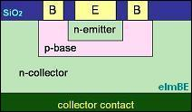

The Bipolar
Transistor
The
invention of the
bipolar junction transistor in 1948 by Bardeen,
Brattain, and Shockley paved the way for the subsequent arrival of the
integrated circuit, which revolutionized the semiconductor industry.
The bipolar transistor is a
three-terminal
device consisting of 3
layers of
alternating n- and p-type materials referred to as the
emitter,
base, and
collector.
Its structure basically consists of two back-to-back diodes, one
between the emitter and base and the other between the base and
collector.
There
are two types of bipolar transistor:
the
NPN and the
PNP.
In the NPN transistor, the base is composed of a p-type material
and is sandwiched by an n-type emitter and an n-type collector.
In the PNP, the base is n-type while the emitter and collector
are p-type.
|
 |
|
Figure 1. Structure of a planar vertical NPN bipolar
transistor |
The bipolar
transistor works by yielding a
high collector current when a
relatively small current is forced into its
base.
Since Ib is relatively much smaller than Ic, a small variation in
Ib results in a much larger variation in Ic.
This, in effect, is
current
amplification,
with the current gain known as the
beta
of the transistor. The currents going into and out of
the emitter, base, and collector follow Kirchoff's current law:
Ib=Ie-Ic.
Since Ic is much greater than Ib, Ie is very close in value to Ic.
In short, a large current flows from the emitter to the collector
of a transistor whenever the base receives some input current.
The transistor is therefore very useful as a switch or as an
amplifier.
How
the transistor operates (and therefore used) depends greatly on how it
is electrically stimulated, or
biased.
The transistor may be operated in three different regions:
saturation,
cut-off, and
active.
A transistor is said to be
saturated if
both its base-collector and
base-emitter junctions are
forward biased.
Under this mode, the transistor is already completely 'on', i.e.,
the collector current is already very high and no longer increases
appreciably even if more current is fed into the base.
A transistor is in the
cut-off
region if
both
of its junctions are
reverse biased.
Under this mode, the transistor is 'off'', i.e., the collector
current
is very low.
A transistor being used as a switch is operated
alternately
between saturation and cut-off regions.
A transistor in the active region exhibits a change in collector
current that is
proportional to the change in base current.
A transistor being used as an amplifier is therefore operated in
this region.
The base-emitter junction of a transistor in active region is
forward-biased while its base-collector junction is reverse-biased.
See Also:
What is a Semiconductor?; p-n Junction; Diode;
MOSFET; JFET;
IC Manufacturing
HOME
Copyright
©
2001-2006
www.EESemi.com.
All Rights Reserved.